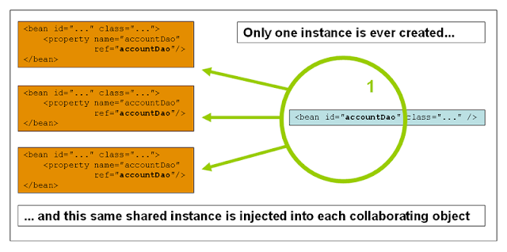

In this guide, we will learn the different types of bean scopes in the Spring framework.
Spring Framework supports following bean scopes :
Only one shared an instance of a singleton bean is managed, and all requests for beans with an id or ids matching that bean definition result in that one specific bean instance being returned by the Spring container.
To put it another way, when you define a bean definition and it is scoped as a singleton, the Spring IoC container creates exactly one instance of the object defined by that bean definition. This single instance is stored in a cache of such singleton beans, and all subsequent requests and references for that named bean return the cached object.
To define a bean as a singleton in XML, we would write, for example:
<bean id="accountService" class="com.foo.DefaultAccountService"/>
<!-- the following is equivalent, though redundant (singleton scope is the default) -->
<bean id="accountService" class="com.foo.DefaultAccountService" scope="singleton"/>
To define a bean as a singleton in java based bean configuration, we would write, for example:
The non-singleton, prototype scope of bean deployment results in the creation of a new bean instance every time a request for that specific bean is made. That is, the bean is injected into another bean or you request it through a getBean() method call on the container.
As a rule, use the prototype scope for all stateful beans and the singleton scope for stateless beans.
The following diagram illustrates the Spring prototype scope. A data access object (DAO) is not typically configured as a prototype, because a typical DAO does not hold any conversational state; it was just easier for this author to reuse the core of the singleton diagram. The following example defines a bean as a prototype in XML:
<bean id="accountService" class="com.foo.DefaultAccountService" scope="prototype"/>
```xml
To define a bean as a prototype in java based bean configuration, you would write, for example:
```java
@Configuration
public class AppConfiguration {
@Bean
@Scope("prototype")
public UserService userService(){
return new UserService();
}
}
In contrast to the other scopes, Spring does not manage the complete lifecycle of a prototype bean: the container instantiates, configures, and otherwise assembles a prototype object, and hands it to the client, with no further record of that prototype instance.
When you use singleton-scoped beans with dependencies on prototype beans, be aware that dependencies are resolved at instantiation time. Thus if you dependency-inject a prototype-scoped bean into a singleton-scoped bean, a new prototype bean is instantiated and then dependency-injected into the singleton bean. The prototype instance is the sole instance that is ever supplied to the singleton-scoped bean.
However, suppose you want the singleton-scoped bean to acquire a new instance of the prototype-scoped bean repeatedly at runtime. You cannot dependency-inject a prototype-scoped bean into your singleton bean, because that injection occurs only once, when the Spring container is instantiating the singleton bean and resolving and injecting its dependencies. If you need a new instance of a prototype bean at runtime more than once, see Method injection
The request, session, application, and websocket scopes are only available if you use a web-aware Spring ApplicationContext implementation (such as XmlWebApplicationContext). If you use these scopes with regular Spring IoC containers such as the ClassPathXmlApplicationContext, an IllegalStateException will be thrown complaining about an unknown bean scope.
To support the scoping of beans at the request, session, application, and websocket levels (web-scoped beans), some minor initial configuration is required before you define your beans. (This initial setup is not required for the standard scopes, singleton and prototype.)
How you accomplish this initial setup depends on your particular Servlet environment.
If you access scoped beans within Spring Web MVC, in effect, within a request that is processed by the Spring DispatcherServlet, then no special setup is necessary: DispatcherServlet already exposes all relevant state.
If you use a Servlet 2.5 web container, with requests processed outside of Spring’s DispatcherServlet (for example, when using JSF or Struts), you need to register the org.springframework.web.context.request.RequestContextListener ServletRequestListener. For Servlet 3.0+, this can be done programmatically via the WebApplicationInitializer interface. Alternatively, or for older containers, add the following declaration to your web application’s web.xml file:
<web-app>
...
<listener>
<listener-class>
org.springframework.web.context.request.RequestContextListener
</listener-class>
</listener>
...
</web-app>
Alternatively, if there are issues with your listener setup, consider using Spring’s RequestContextFilter. The filter mapping depends on the surrounding web application configuration, so you have to change it as appropriate.
<web-app>
...
<filter>
<filter-name>requestContextFilter
<filter-class>org.springframework.web.filter.RequestContextFilter
</filter>
<filter-mapping>
<filter-name>requestContextFilter
<url-pattern>/*
</filter-mapping>
...
</web-app>
DispatcherServlet, RequestContextListener, and RequestContextFilter all do exactly the same thing, namely bind the HTTP request object to the Thread that is servicing that request. This makes beans that are request- and session-scoped available further down the call chain.
Consider the following XML configuration for a bean definition:
<bean id="loginAction" class="com.foo.LoginAction" scope="request"/>The Spring container creates a new instance of the LoginAction bean by using the loginAction bean definition for each and every HTTP request. That is, the loginAction bean is scoped at the HTTP request level. You can change the internal state of the instance that is created as much as you want because other instances created from the same loginAction bean definition will not see these changes in state; they are particular to an individual request. When the request completes processing, the bean that is scoped to the request is discarded.
When using annotation-driven components or Java Config, the @RequestScope annotation can be used to assign a component to the request scope.
@RequestScope
@Component
public class LoginAction {
// ...
}
Consider the following XML configuration for a bean definition:
<bean id="userPreferences" class="com.foo.UserPreferences" scope="session"/>The Spring container creates a new instance of the UserPreferences bean by using the userPreferences bean definition for the lifetime of a single HTTP Session. In other words, the userPreferences bean is effectively scoped at the HTTP Session level. As with request-scoped beans, you can change the internal state of the instance that is created as much as you want, knowing that other HTTP Session instances that are also using instances created from the same userPreferences bean definition do not see these changes in state, because they are particular to an individual HTTP Session. When the HTTP Session is eventually discarded, the bean that is scoped to that particular HTTP Session is also discarded.
When using annotation-driven components or Java Config, the @SessionScope annotation can be used to assign a component to the session scope.
@SessionScope
@Component
public class UserPreferences {
// ...
}
Consider the following XML configuration for a bean definition:
<bean id="appPreferences" class="com.foo.AppPreferences" scope="application"/>The Spring container creates a new instance of the AppPreferences bean by using the appPreferences bean definition once for the entire web application. That is, the appPreferences bean is scoped at the ServletContext level, stored as a regular ServletContext attribute. This is somewhat similar to a Spring singleton bean but differs in two important ways: It is a singleton per ServletContext, not per Spring 'ApplicationContext' (for which there may be several in any given web application), and it is actually exposed and therefore visible as a ServletContext attribute.
When using annotation-driven components or Java Config, the @ApplicationScope annotation can be used to assign a component to the application scope.
@ApplicationScope
@Component
public class AppPreferences {
// ...
}